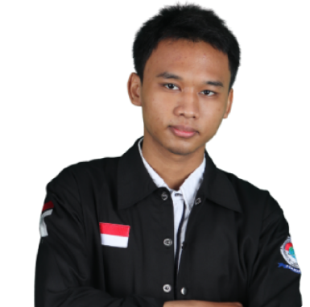

Bridging Logic and Creativity
Coming from an AI background, I learned that powerful logic needs clarity. Now, I channel my analytical skills into Front-End Development—building interfaces that make complex systems feel simple for users.
My ResumePORTFOLIO
Explore my journey across the tech stack.
Leveraging AI backgrounds to build smarter,
more intuitive web experiences.

Let's Connect
Whether it's discussing AI logic, pixel-perfect designs, or a new web project—I'm always ready for a chat. Drop me a line!
Say Hello